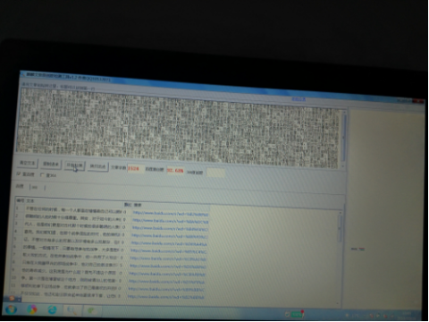

《三国演义》中的诸葛亮，曾多次用火攻，为何只在火烧藤甲兵时感叹会折寿？
不管在任何的时候，每一个人都是在憧憬着自己可以拥有聪明的大脑，所以在对待一些很聪明的人的时候十分得尊重。其实，对于如今的人来说虽然很是羡慕拥有高智商的现代人，但是他们更是对古代那个时候的很多聪明的人表示羡慕，尤其是在三国时期的诸葛亮。
我们
都知道，在那个战争混乱的时代，他的神机妙算在一场一场战争中得到验证。不管对方有多么的厉害以及环境有多么的复杂，在他的眼里，这些事情都是特别小的事情。一般情况下，只要有他参与的战争，大多是胜利为结果，至于过程，他喜欢采取火攻的方式。在他所参加战争中，他一共用了火攻这个方法去打败敌人共五次，可是只有在火烧藤甲兵的那场战争中，他对自己的做法表示不认同，觉得这样做的后果会让他的寿命减少。这到底是为什么呢？
首
先不提这个原因，先说一下这五次采取火攻的战争。第一次是在博望坡这个地方，刚刚被请出山的他第一次参加战争，为了确保自己能够顺利的拿下这场战争，他就拿出了自己最喜欢的并且最让自己放心的火攻这个方式。不仅仅如此，他还和赵云联合起来给夏侯淳下套，让他们进入事先准备的包围圈，再利用火攻这个方式，让他们取得了很大的胜利。
而第二次使用火攻这个方法就是在第一次没过多久后，因为当夏侯淳失败而逃后，作为他主子的曹操只好自己的大将曹仁亲自去和诸葛亮对战。只是到了新野的时候，发现没有任何有关对方的踪迹就放弃后来到了与新野相邻的樊城。可是让他们没有想到的是，诸葛亮居然在晚上所有人放松的时候，火攻了新野，曹仁无可奈何之下，只好让城内的士兵都通过另一个门赶紧离开了。
第
三次就是很多人都知道的火烧赤壁那场战争，毕竟几乎所有人的人从小都开始学习过这个故事。记得当时的环境特别的混乱，诸葛亮为了能够让自己这一方强大起来，就只好与第三方一起合作为了打败曹操。可是就算联合起来也不如曹操这一方的势力，于是他就只好采取火攻的方法来取得胜利，这也可以算是在古代那个时候以少数赢得多的战场，可是火攻这个方法是多么的厉害。
而第四次就是火烧藤甲，这次战争主要是诸葛亮带领着自己的兵马和对方孟获带领的士兵进行的。当诸葛亮看到对方有那么的兵力，他想想要了一个很好的办法：由于对方实力特别的强大，只能智取而不能硬碰硬，所以就把对方引到一个防守很容易但是攻打时很难的地方，最后又用了他最喜欢的火攻这个计策，把对方完美的攻败了，并且还把对方的猛将收编于自己的手下。可是等这场战争结束后，他就反省自己，感叹到虽然这样做都是为了朝廷，可是一直用火攻这个方式杀人的话，一定会折自己的寿命。
但是在那之后的上方谷战争中，他还是使用了火攻这个方法，不过不巧的是正好碰上下雨的天气，这才让对手司马懿逃得一命。可是在这次战争中他并没有感叹自己会折寿，那为何只有在火烧藤甲的时候发出那样的感叹呢？
其实
，这主要有两个原因。第一个原因是和他本人有关，我们都知道他当时是扮演着谋士的位置，所以只用下达命令就可以，这样一来，他完全没有不知道自己的火攻之计是多么的厉害。而在与藤甲兵发生的那场战争中，是由他亲自带队的，这自然而然的就知道了自己的这条计策可以杀死那个多人。看到很多士兵都是因为他自己间接的去世，他就觉得自己的寿命会
减少。
至于第二个原因就是这场战争的目的，主要是想把孟获收编于自己的战队，并不想滥杀无辜。而且这只战队的战斗力可以算是当时很高的，如果能让自己所用那就再好不过。所以当他看到那么多的士兵被火给活活烧死的时候，他的心里就不是很好受。
在小编看来，诸葛亮虽然用火攻这个计谋杀死了很多的士兵，可是他并不是心甘情愿的，毕竟生在当时的那个环境中有时候是身不由己的。其实，从他的感叹中也可以看出他是一个有良心的人，甚至不惜说自己的做法会让自己折寿。你觉得他是怎样的人呢？
